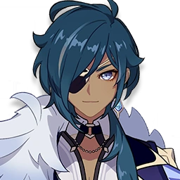
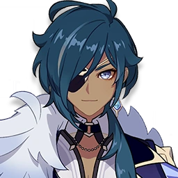

Kaeya es la fiel mano derecha de Jean en Ordo Favonius. Es el Capitán
de Caballería de los Caballeros de Favonius. La gente de Mondstadt lo
tiene en alta estima, incluso con todas sus excentricidades y
secretos.
Talentos
Ataque Normal: Realiza hasta 5 ataques rápidos.
Ataque Cargado: Consume una cierta cantidad de
Aguante para lanzar un golpe de espada cruzado.
Ataque Descendente: Se lanza desde el aire para
golpear el suelo, dañando a los enemigos a lo largo del camino e
infligiendo Daño de Área en el momento del impacto.
Lanza una ráfaga gélida que inflige Daño Cryo a los enemigos
frente a Kaeya.
Al condensar la escarcha en el aire, Kaeya invoca 3 carámbanos
que giran a su alrededor. Estos carámbanos seguirán al personaje
e infligirán Daño Cryo a los enemigos que se atraviesen.
Al golpear a un enemigo con Golpe de escarcha,
Kaeya restaura Vida equivalente al 15% del ATQ.
Cuando Golpe de escarcha congela a un enemigo,
el enemigo congelado dejará caer Partículas Elementales
adicionales. Cada golpe dará un máximo de 2 Partículas
Elementales adicionales.
Disminuye el consumo de Aguante de todos los miembros del equipo
al esprintar en un 20%.
Constelaciones
La Prob. CRIT del Ataque Normal y Cargado de Kaeya aumentan en
un 15% contra enemigos afectados por Cryo.
Al derrotar a un enemigo con Vals gélido, aumenta su duración en
2.5 s hasta un máximo de 15 s.
Aumenta el nivel de habilidad de
Golpe de escarcha +3. Puede ser aumentado hasta
Niv. 15.
Cuando la Vida de Kaeya cae por debajo del 20%: Genera un escudo
que absorbe daño igual al 30% de su Vida Máxima durante 20 s. El
escudo tiene un efecto de absorción de 250% de Daño Cryo. Solo
puede ocurrir una vez cada 60 s.
Aumenta el nivel de habilidad de
Vals gélido +3. Puede ser aumentado hasta Niv.
15.
Vals gélido produce 1 carámbano adicional y
regenera 15 pts. de Energía Elemental al ser lanzado.

 
